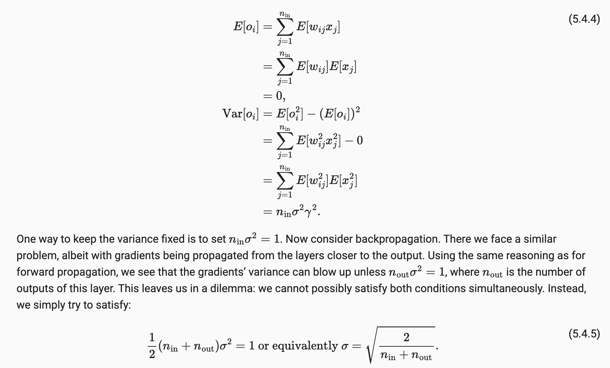
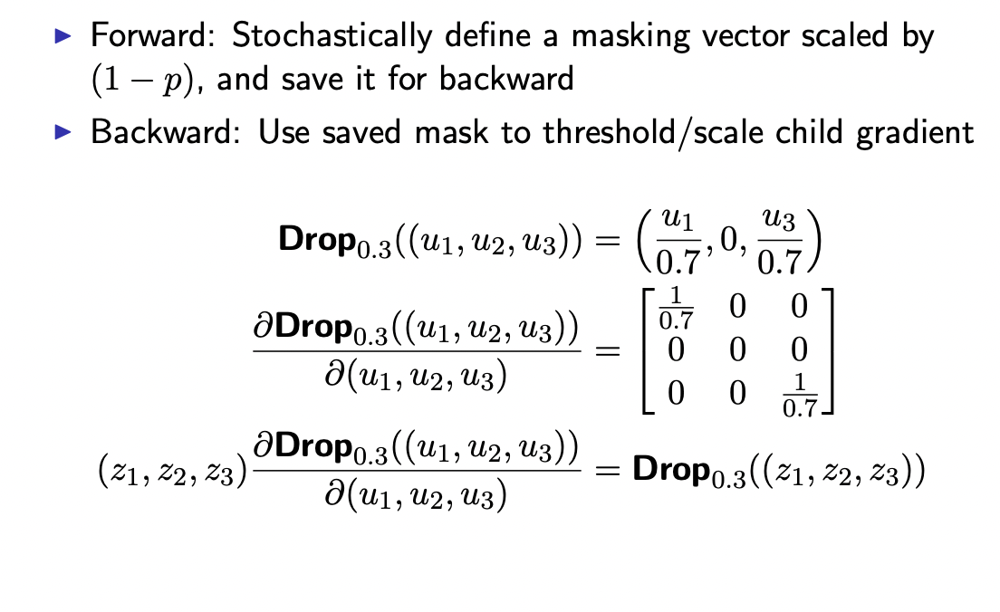

Deep Learning - Quick Revision
Basics
Infotheory
Entropy
The entropy of a discrete random variable X with distribution p over K states is defined by:
\[ H(X) = -\sum_{i=1}^{K} p(i) \log_{2}(p(i)) \]
Cross-entropy
\[ H(p, q) = -\sum_{i=1}^{K} p(i) \log_{2}(q(i)) \]
KL divergence
\[ D_{KL}(p \| q) = \sum_{i=1}^{K} p(i) \log_{2}\left(\frac{p(i)}{q(i)}\right) \]
Relation:
\[ H(p, q) = H(P) + D_{KL}(p \| q) \]
Why do we use KL for knowledge distillation ?
In case of distillation, H(P) is the teacher’s entropy,where there is no updates/gradient, thus makes no sense to include it in loss formulation.
Deep Learning
General techniques
- Why random initialization ?
2. How to deal with exploding gradient ?
Clip gradients
- How to deal with vanishing gradient ?
Batchnorm/layer norm etc: Ensure activations are always in desired range. Say when using sigmoid/tanh, if the activations are closer to
0,we’ll have good(close to1) gradient, thus no vanishing.Architecture : modify it to have additive updates. (Residual connections)
Modify activations:
- Relu: `pros`: no saturation `cons`: Dead lelu, if weights are large negative,some neurons turn off and never get updated. UPDATES: LEAKY RELU,ELU etcCareful initialization
Xavier Initialization : control the variance of both activations and the gradient.(just a heuristic) - Assumes no non-linearity, and weights,inputs are independent, with mean zero. - Keep the output variance same as input
- Ways to deal with overfitting ?
Weight-decay
Dropout
Dropout : Activations shouldn’t depend on any one of the weights. Randomly drop some weights during training.(introduce noise in an unbiased way) Two ways to implement:
1.Training: preserve the weights by dividing active ones by 1-p(prob of active).

- 1.Test: Just not use dropout
- 2.Training: No adjustmet
- 2.Test: remove dropout,Multiply weights by (1-p)Architecture abstractions
Various architectures are our ways of encoding our inductive biases.
- translational invariance: Output is same irrespective of the location in cnn’s. Achieved by
pooling - translational equivariance: shift+conv = conv+shift
Natural signals share 3 properties
Locality: easier to predict future using recent past than earlier. => Sparsity
Stationarity: same patterns repeat again and again. => Weight sharing.
Compositionality: => Deeper networks.
Optimization
Optimization (refer cowan’s notes)
Gradient descent => Taylor series expansion : F(x) ≈ F(xt) + F′(xt)(x − xt) + 1/2F′′(xt)(x − xt)^2.
Direction : This tells under second order approximation => move opposite to direction of grad => func value decreases.
Amount : How much to move => roughly on the order of inverse second derivative. More curvature= move slowly.
Momentum: At any point continue moving a small part in the direction previously moved.
\[x_{t+1} = x_t − α_t∇F (x_t) + β_t(x_{t} − x_{t−1})\]
Intuition: Using the information of both current and previous gradient = approximating second order methods/ proxy estimation of curvature.
What’s Good Step-Size ?
- generally it should be inversely proprotional to the curvature
ADAGRAD : If the past updates for a component has been smaller => less curvature => can use higher learning rate. Method: Refer
{kind=link}
Flaw: because the accumulated gradients Git are perpetually increasing by positive amounts, the stepsizes will be decreasing to zero. If this happens to quickly, then the algorithm effectively ‘freezes’ and is unable to improve.
RMS PROP: Instead of taking sum of past gradients along a direction, we can take decaying average METHOD
{kind=link}
ADAM: RMSPROP+ MOMENTUM
{kind=link}
direction => momentum
learning rate for each direction => rmsprop
momentum+rmsprop = adam.